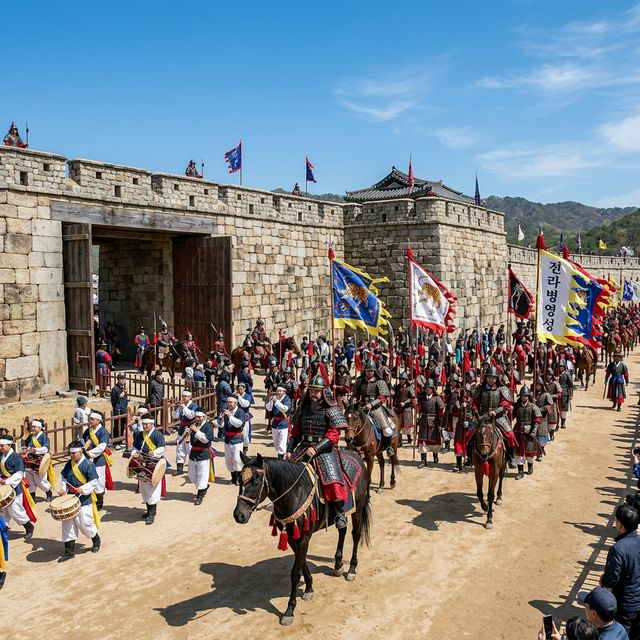
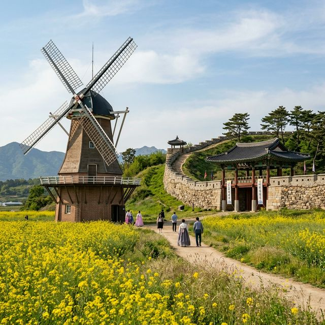
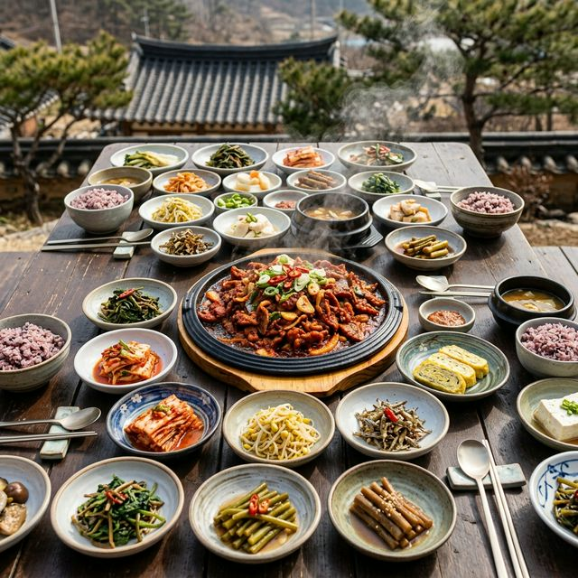

강진 전라병영성 축제 2026 — 조선 육군의 총본산에서 즐기는 전통 무예와 병영 식도락
전라남도 강진군에서 펼쳐지는 2026 강진 전라병영성 축제는 500년 넘는 세월 동안 조선 남부의 육군 지휘부였던 전라병영성의 웅장한 기개를 체험할 수 있는 역사
축제입니다. 4월 17일부터 19일까지 열리는 이번 행사는 화려한 병마절도사 입성식부터 하멜의 유배 역사가 담긴 하멜기념관 투어, 그리고 연탄불 향 가득한 병영돼지불고기까지 오감을 만족시키는 특별한
여정을 선사합니다. 역사의 숨결이 서린 호국의 현장으로 여러분을 초대합니다!

조선시대 병마절도사의 위풍당당한 입성식을 재현한 퍼레이드 행렬 | AI 제작 이미지
1. 전라병영성: 조선 남부를 지켰던 호국 철옹성
강진의 전라병영성은 1417년(태종 17년)에 축조되어 1895년까지 무려 500여 년간 전라도와 제주도의 육군을 총괄했던 전라병마절도사영의 기지입니다. 성곽길을 따라 걷다 보면
거대한 석벽들이 뿜어내는 위엄에 압도되는데, 이는 단순한 성벽이 아니라 나라의 안녕을 위해 수많은 장병이 땀 흘리며 지켜냈던 호국의 상징이기 때문입니다. 성곽 사이로 불어오는 봄바람에는 과거 군사들의 훈련
소리가 섞여 있는 듯한 웅장한 기운이 느껴집니다.
복원된 성곽은 총 길이 1,060m에 달하며, 정비된 성벽 위를 걷노라면 강진 병영면의 평화로운 전경이 한눈에 들어옵니다. 발밑에 닿는 차가운 돌의 감촉과 머리 위를 스치는 청명한 4월의 공기는 일상의
번잡함을 씻어버리기에 충분합니다. 특히 올해 축제에서는 성벽의 역사적 의미를 설명하는 해설사 투어를 강화하여, 성곽의 축조 방식이나 방어 전략 등을 전문가의 깊이 있는 안목으로 배울 수 있는 기회를
제공합니다.
역사학자들에 따르면 병영성은 평지에 세워진 읍성 형태지만, 사방이 산으로 둘러싸여 요새로서의 최적의 조건을 갖추고 있었다고 합니다. 2026년 축제는 '역사가 살아있는, 전라병영 액션파크'라는 슬로건 아래,
이러한 지형적 특징을 활용한 다양한 무예 시연과 체험 프로그램을 배치했습니다. 매년 방문객 수가 20% 이상 증가하며 남도를 대표하는 역사 여행지로 확실히 자리매김하고 있습니다.
2. 축제의 꽃: 병마절도사 입성식과 취타대 퍼레이드
축제의 하이라이트는 단연 4월 18일 토요일에 열리는 병마절도사 입성식입니다. 수백 명의 재현 행렬이 조선시대 군복을 입고 기마대와 함께 행진하는 모습은 그 자체로 거대한 역사
영화의 한 장면입니다. 선두에 선 취타대가 울리는 나발과 태평소 소리는 축제장의 공기를 팽팽하게 긴장시키며, 웅장한 북소리는 대지를 울리며 구경하는 이들의 심장 박동까지 고동치게 만듭니다.
퍼레이드의 백미는 성문 앞에서 펼쳐지는 수문장 교대식과 격식을 갖춘 입성 의례입니다. 절도사가 성문 안으로 발을 들이는 순간, 하늘 위로 축포가 터지고 군민들이 환호하는 광경은 축제의 열기를 정점으로
끌어올립니다. 붉은 깃발이 나부끼고 창검이 반짝이는 속에서 우리 조상들의 용맹함을 직접 눈으로 확인하는 것은 아이들에게 무엇과도 바꿀 수 없는 생생한 역사 교육의 현장이 됩니다.
올해 입성식은 증강현실(AR) 기술을 도입하여, 스마트폰을 비추면 당시의 병영성 내부 모습이 입형적으로 드러나는 디지털 퍼레이드가 함께 진행됩니다. 전통적인 재현의 가치는 유지하되 현대적인 기술을 접목하여
MZ세대 관광객들에게도 '인포테인먼트'적인 즐거움을 주고 있습니다. 실제 지난해 참가자들의 설문 조사 결과, 입성식 퍼레이드가 만족도 1위(94%)를 차지할 만큼 압도적인 인기를 누리고 있습니다.
3. 전라병영 액션파크: 전통 무예와 현대 무기의 만남
강진 전라병영성 축제는 관람 위주의 축제를 넘어 직접 몸으로 부딪치는 액션 파크를 지향합니다. '전통 무예 시연존'에서는 조선 시대 살수와 사수들이 펼쳤던 권법과 도법 시연이
매시간 열립니다. 칼끝이 가르는 바람 소리와 장창이 부딪치는 둔탁한 소리는 전율을 일으키기에 충분하며, 시연 후에는 전문가의 지도를 받아 직접 목검을 휘둘러보는 체험도 가능합니다.
한쪽에서는 현대적인 감각의 '밀리터리 서바이벌'이 진행됩니다. 페인트탄 사격과 장애물 넘기 등 군대 문화를 재미있게 풀어낸 활동들은 젊은 층과 가족 단위 방문객들에게 큰 호응을 얻고 있습니다. 흙바닥을 뒹굴며
목표를 달성해 나가는 과정에서 참가자들은 동료애와 성취감을 느끼며, 병영성이라는 장소가 가진 '호국'의 의미를 즐겁게 체득하게 됩니다. 특히 어린이들을 위한 '꼬마 병사 훈련소'는 귀여운 군복 체험으로
부모들의 카메라 셔터를 멈추지 않게 합니다.
전통 무기인 '신기전'과 현대의 'FPV 드론 호버링'을 비교 전시하는 기획전은 과거와 현재의 무기 체계 변화를 한눈에 보여줍니다. 2026년에는 군부대와의 협력을 통해 실제 K-방산의 자부심을 느낄 수 있는
장비 무대도 소규모로 마련되어, 역사적 자부심이 현재 진행형임을 강조하고 있습니다. 이러한 융복합적 체험 구성은 강진 병영성 축제만의 독보적인 정체성을 형성하고 있습니다.
4. 하멜의 7년: 동서양 교류의 역사가 숨 쉬는 하멜기념관
전라병영성 바로 옆에는 튤립과 풍차가 이색적인 조화를 이루는 하멜기념관이 자리하고 있습니다. 1653년 제주도에 표류한 네덜란드인 헨드릭 하멜 일행이 이곳 강진 병영에서 7년
동안 유배 생활을 했던 역사를 기리는 곳입니다. 기념관에 들어서면 하멜이 남긴 '하멜표류기'의 사본과 당시의 생활 유물들이 전시되어 있어, 낯선 땅 조선에서 희망을 잃지 않았던 서양인의 눈에 비친 강진의
모습을 엿볼 수 있습니다.
기념관 마당에는 네덜란드를 상징하는 거대한 풍차가 설치되어 있는데, 봄바람을 맞으며 천천히 돌아가는 풍차의 날개는 고즈넉한 한옥 성벽과 묘한 대비를 이루며 이국적인 정취를 뿜어냅니다. 노란 유채꽃이 만발한
정원을 지나 하멜이 쌓았다는 '하멜식 담장(빗살무늬 담장)'을 따라 걷다 보면, 언어와 문화가 달랐던 조상들과 하멜 일행이 소통하며 살아갔을 따뜻한 인간미를 상상하게 됩니다.
2026년 축제에서는 네덜란드 대사관과 협력하여 '하멜의 고향 호르쿰 맛보기' 행사를 진행합니다. 네덜란드 전통 간식인 스트룹와플과 강진의 전통차를 함께 즐기는 티타임은 동서양의 조화를 미각으로 체험하는
특별한 기회입니다. 또한 하멜 일행이 조선에 전파했다고 알려진 서양식 성곽 보수 기술들을 직접 확인해 보는 학술 가이드 투어도 역사 매니아들에게 큰 인기를 끌고 있습니다.

전통 성곽과 네덜란드풍 풍차가 어우러진 이색적인 하멜기념관 전경 | AI 제작 이미지
5. 병영돼지불고기 거리: 연탄불 향 가득한 조선의 맛
금강산도 식후경이라 했듯, 병영 여행의 정수는 병영돼지불고기 거리에서 완성됩니다. 과거 병마절도사가 부임했을 때 강진현감을 대접하기 위해 준비했다는 이 요리는 연탄불에 직접 구워
진한 불맛을 입힌 것이 특징입니다. 식당가에 들어서면 골목 가득 퍼지는 고소한 고기 굽는 냄새가 여행자의 발길을 잡습니다. 자리에 앉으면 상다리가 휘어질 듯 차려지는 수십 가지의 밑반찬과 함께 주인공인
불고기가 등장합니다.
매콤달콤한 비법 양념에 숙성된 돼지고기가 연탄불의 고온에서 순식간에 익어 육즙을 가득 머금고 있습니다. 한 점 입에 넣으면 입안 가득 퍼지는 훈연 향과 쫄깃한 고기의 식감이 조화를 이루며 감탄사를 자아냅니다.
여기에 갓 지은 가마솥 밥과 직접 담근 젓갈을 곁들이면 '남도 한정식'의 진정한 위력을 실감하게 됩니다. 축제 기간 동안 이 거리의 식당들은 이른 아침부터 밤늦게까지 문전성시를 이루며 방문객들의 입을 즐겁게
합니다.
최근 2026년에는 위생 관리와 고객 편의를 위해 '오픈 키친' 형태의 식당들이 늘어났으며, 채식주의자를 위한 '불맛 버섯불고기' 메뉴도 새롭게 등장하여 선택의 폭을 넓혔습니다. 강진군청의 데이터에 따르면
병영돼지불고기를 먹기 위해 강진을 다시 찾는 재방문율이 60%를 상회한다고 합니다. 이는 단순한 음식을 넘어 병영성 축제의 강력한 콘텐츠로서 지역을 지탱하는 힘이 되고 있습니다.
6. 힐링의 시간: 연희당 다도 체험과 성곽길 산책
축제장의 소란스러움을 피해 잠시 여유를 찾고 싶다면 최근 복원된 연희당을 방문해 보세요. 조선 시대 관아의 손님들을 접대하던 이 우아한 목조 건축물은 현재 힐링 가득한 다도 체험
공간으로 운영되고 있습니다. 창을 열면 성벽 너머로 보이는 초록빛 들판과 푸른 하늘이 액자 속 그림처럼 펼쳐집니다. 따뜻한 차 한 잔을 마시며 내려다보는 병영성의 풍경은 마음의 평온을 되찾아주는 최고의
보약입니다.
차 한 잔의 여유를 즐긴 뒤에는 성곽길 산책에 나서보시길 추천합니다. 연둣빛 새순이 돋아난 성 주변의 나무들과 봄꽃들이 한데 어우러져 천상의 산책로를 형성합니다. 발걸음을 옮길
때마다 들려오는 산새 소리와 바람에 흔들리는 나뭇잎 소리는 자연이 주는 오케스트라와 같습니다. 성곽의 굴곡을 따라 천천히 걷다 보면 500년 전 병사들이 이곳에서 바라보았을 풍경이 오버랩되며 깊은 사유의
시간에 잠기게 됩니다.
전문가들은 연희당의 복원이 축제의 품격을 높이는 결정적인 역할을 했다고 분석합니다. 단순히 먹고 노는 축제에서 나아가, 전통 건축의 미학을 체험하고 명상할 수 있는 공간을 제공함으로써 휴식형 관광을 선호하는
현대인들의 니즈를 충족시켰기 때문입니다. 실제 연희당의 다도 클래스는 축제 기간 내내 사전 예약이 매진될 만큼 인기가 높아, 방문 전 반드시 예약 현황을 확인해야 합니다.

연탄불 향이 일품인 병영돼지불고기와 푸짐한 남도 한정식 상차림 | AI 제작 이미지
7. 하멜촌 맥주와 커피: 강진에서 만나는 이색적인 향기
강진 병영면에는 하멜의 역사를 비즈니스 모델로 승화시킨 하멜촌 맥주와 커피가 있습니다. 네덜란드의 맥주 제조 기법을 활용하여 지역 특산물인 귀리를 첨가해 만든 하멜촌 맥주는
구수하면서도 끝맛이 깔끔하여 축제장 최고의 인기 음료입니다. 시원한 맥주 한 잔에 갓 구운 불고기를 곁들이는 조합은 오직 이곳 병영성 축제에서만 만끽할 수 있는 호사입니다.
또한 풍차 근처의 카페에서는 '하멜 커피'를 선보입니다. 직접 로스팅한 원두의 진한 향기가 성벽 주변으로 은은하게 퍼져나가는데, 컵 홀더에 그려진 하멜의 캐릭터는 여행자들에게 소소한 즐거움을 줍니다. 전통적인
한옥 마을 사이에서 마시는 유럽풍 커피는 강진이 가진 개방성과 포용성을 상징하는 듯합니다. 따뜻한 커피 한 잔을 들고 성곽 돌담에 앉아 해 질 녘의 풍경을 감상하는 것은 축제의 또 다른
묘미입니다.
2026년에는 '하멜촌 오렌지 축제'가 부대 행사로 결합되어, 네덜란드의 상징 색상인 오렌지색 의상을 입은 사람들에게 음료 할인 혜택을 제공하는 등 활기찬 분위기를 조성하고 있습니다. 이러한 이색적인 시도는
지역 특산물 판매 증진뿐만 아니라 '병영'이라는 소재를 더욱 젊고 활기찬 이미지로 탈바꿈시키는 원동력이 되고 있습니다. 전통주인 강진 막걸리와 하멜 맥주가 사이좋게 팔리는 모습은 진정한 상생의 현장입니다.
8. 전라병영성 한바퀴: 스탬프 미션과 기념품 팁
축제장을 구석구석 알차게 즐기고 싶다면 전라병영성 한바퀴 스탬프 투어에 꼭 참여해 보세요. 안내소에서 리플릿을 받아 성문의 동서남북 4대문과 하멜기념관, 연희당 등 주요 거점을
방문하여 도장을 찍는 미션입니다. 도장을 하나씩 채워가는 재미와 함께 각 장소에 얽힌 역사적 퀴즈를 풀다 보면 어느새 병영성 박사가 된 듯한 자신감을 얻게 됩니다.
스탬프를 모두 모으면 축제 운영 본부에서 선착순으로 '병마절도사 황금 코인'이나 '하멜 캐릭터 굿즈'를 증정합니다. 또한 행사장에서 촬영한 사진을 SNS에 업로드하면 추첨을 통해 강진 청자나 병영 돼지불고기
식사권 등 푸짐한 경품도 제공됩니다. 이러한 참여형 이벤트는 관객들의 체류 시간을 늘리고 축제에 대한 몰입도를 높이는 데 결정적인 역할을 하고 있습니다.
미션 수행 중 성곽 길에서 만나는 재현 연기자들과 찍는 기념사진은 축제의 즐거움을 배가시킵니다. 조선 병사 복장을 한 이들은 때로는 엄격한 수문장으로, 때로는 친근한 이웃으로 변신하여 관광객들에게 잊지 못할
추억을 선사합니다. 2026년에는 디지털 스탬프 투어도 병행되어, 스마트폰 하나만으로 간편하게 미션을 완료하고 모바일 쿠폰을 발급받을 수 있어 더욱 편리해졌습니다.
9. 여행 마무리 가이드: 주차 및 셔틀버스 실전 팁
강진 전라병영성 축제는 병영면 소재지 전체가 축제장으로 활용되므로 교통 편의를 미리 계획하는 것이 좋습니다. 축제 기간에는 병영면사무소와 인근 초등학교 운동장이 임시 주차장으로
개방됩니다. 하지만 주말에는 정체가 심할 수 있으므로, 강진읍내에서 행사장까지 정기적으로 운행하는 무료 셔틀버스를 이용하는 것을 적극 추천합니다. 셔틀버스는 약 20분 간격으로 운행되어 주차 걱정 없이
편안하게 역사 여행을 즐길 수 있게 해줍니다.
1박 2일 여행을 계획 중이라면 인근의 '다산초당'이나 '가우도 출렁다리'를 연계 코스로 잡아보세요. 강진은 볼거리가 풍부하여 하루만으로는 아쉬움이 남는 곳입니다. 축제장 인근의 민박이나 펜션은 예약이 빨리
차기 때문에 서둘러야 하며, 여의치 않다면 강진읍의 호텔이나 모텔을 이용해도 접근성은 좋은 편입니다. 2026년에는 캠핑족들을 위해 전라병영성 인근에 야외 캠핑 구역을 한시적으로 운영하여 별이 쏟아지는 병영의
밤을 누릴 수 있습니다.
마지막으로 방문 전 강진군 공식 문화관광 홈페이지나 축제 SNS를 통해 실시간 공연 취소 여부나 혼잡도를 확인하는 지혜가 필요합니다. 편한 신발과 햇빛을 가릴 모자, 그리고 역사를 사랑하는 따뜻한 마음만
있다면 2026년 강진에서의 봄은 당신의 인생 리스트에 가장 웅장하고 맛깔스러운 한 페이지로 기록될 것입니다.
#강진전라병영성축제
#강진가볼만한곳
#전라도축제추천
#하멜기념관
#병영돼지불고기
#역사문화축제
#4월여행지추천
#병마절도사입성식
#가족나들이장소
#남도미식여행